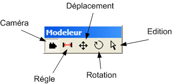

La barre d'outils Modeleur est active avec tous les types de modeleurs 3D.
Cet outils permet simplement de naviguer à l'intérieur des vues 2D et 3D à partir de la souris. Les mouvements dépendent de la configuration faite dans les préférences.
L'outils Règle permet de mesurer des distances, uniquement dans les vues 2D. La distance est affichée contnuellement sur le trait tracé lorsque le bouton droit de la souris reste enfoncé, et la distance finale est affichée dans la fenêtre de message une fois le bouton relaché.
Cet outils offre la possibilité pour certains éléments d'être déplacés à partir de la souris.
Cet outils permet d'appliquer une rotation à certains éléments à partir de la souris.
L'outils Edition permet de modifier la structure d'un élément, il permet par exemple de modifier la position d'un point constituant une courbe de niveau, ou encore d'un angle d'une contruction.